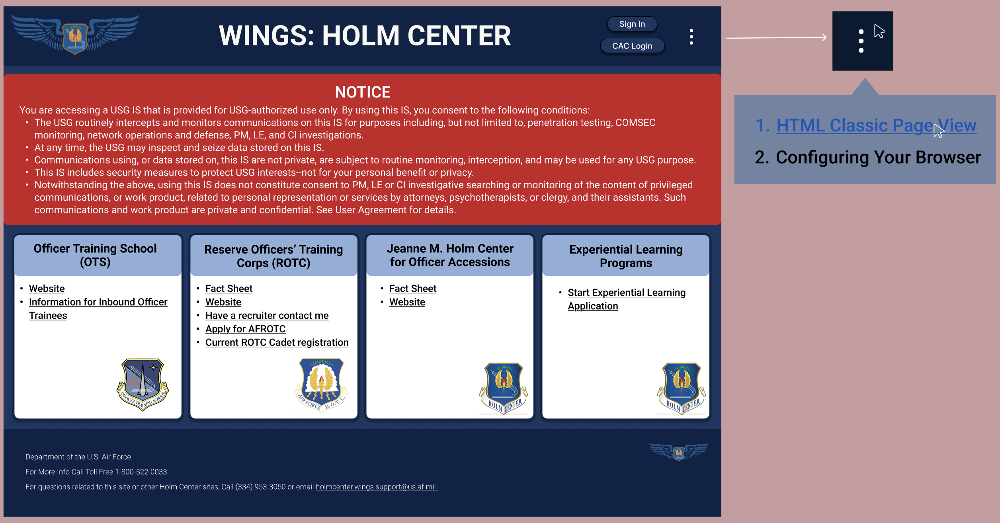
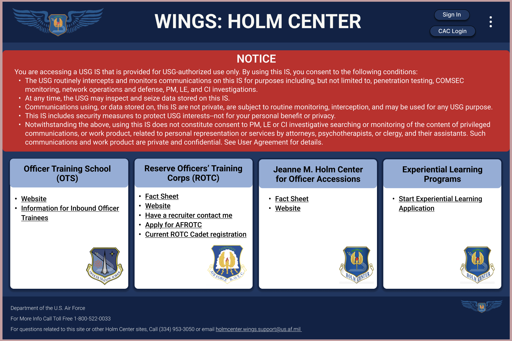
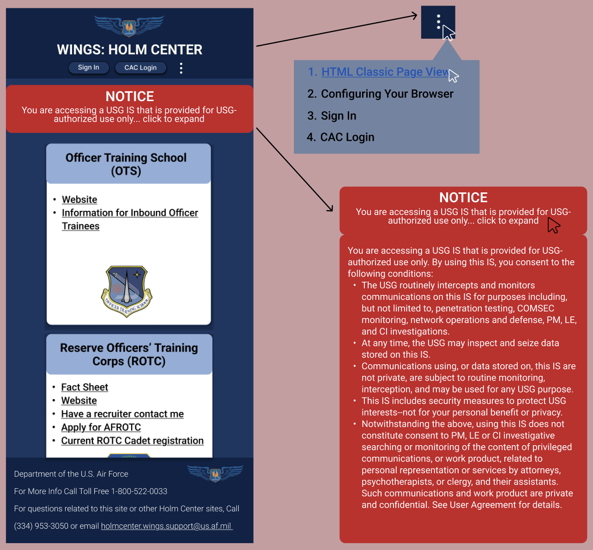

Let's Look At The Mockups!
In order to have a fully accessible and functional site, I decided it would be crucial to have the webpage be fully responsive - meaning it was viewable and usable on all different screen sizes. As this is a complicated task since the layout must change for various screen types, I started by creating mockup designs before beginning to code the actual site. Below, you can see my mockup designs for each screen size along with annotations describing how the accessibility and usability is improved. To help maintain layout regardless of screensizes, I used combinations of flexbox, grid layouts, and CSS's @media function to specify specific redesigns for each screen.
DESKTOP MOCKUP:
All redundant and useless buttons were removed from the page increasing user efficiency without hindering usability. All interactive components are designed with learnability in mind by maximizing their intuitive value. Additionally, there is a clear hierarchy among components due to bigger text, improved layout, and contrasting colors.
TABLET MOCKUP:
When transitioning from a desktop view to a tablet view, everything remains the same, but some text sizes shrink slightly along with the padding in the footer. Everything remains easily readable and digestible for new users.
PHONE MOCKUP:
As screen size continues to shrink towards the size of a phone screen, components begin to stack. With properly stacked components that are fully responsive to changing screen sizes, all interactive components are and remain accessible for all users. The notice collapses (unless prompted to expand by user interaction) but remains the focus of the page to ensure users do not miss it.
